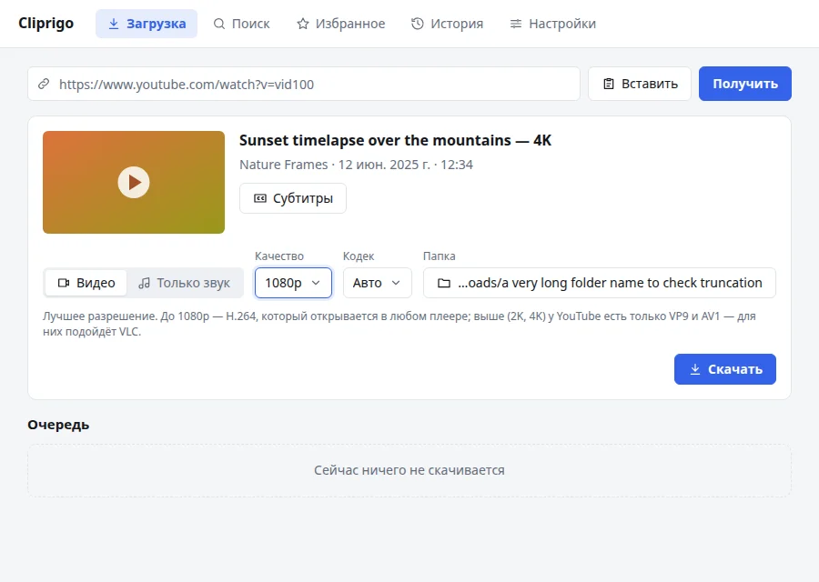
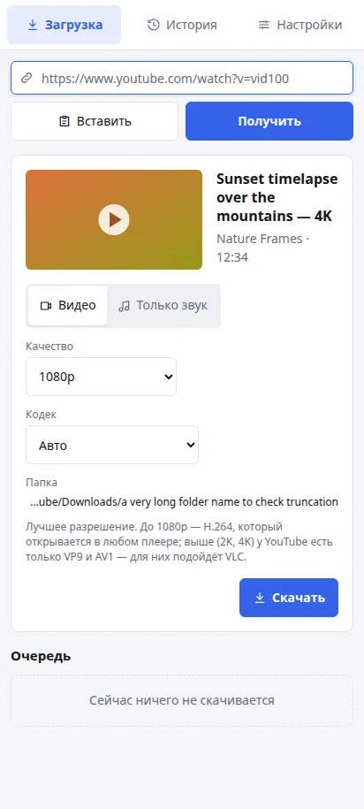
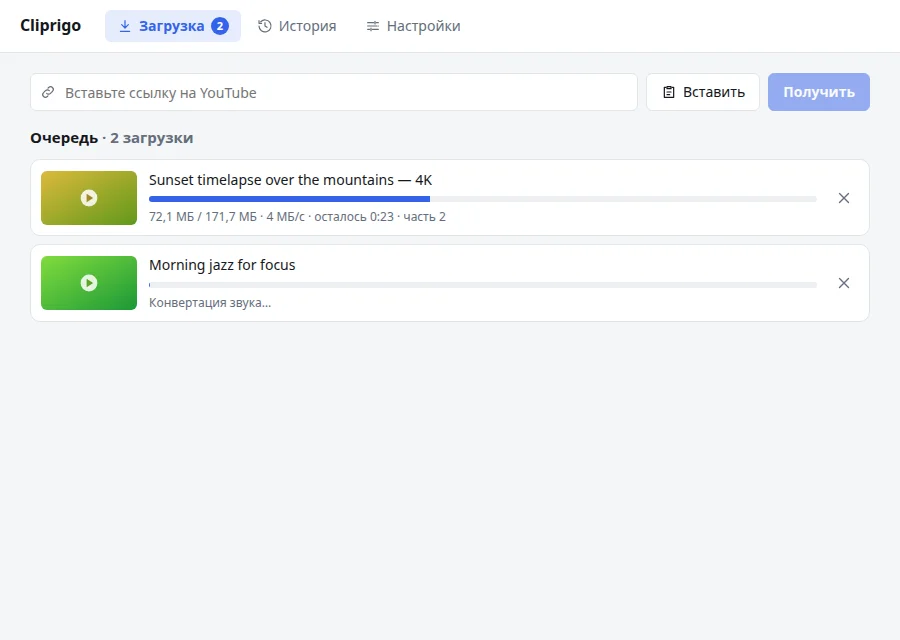
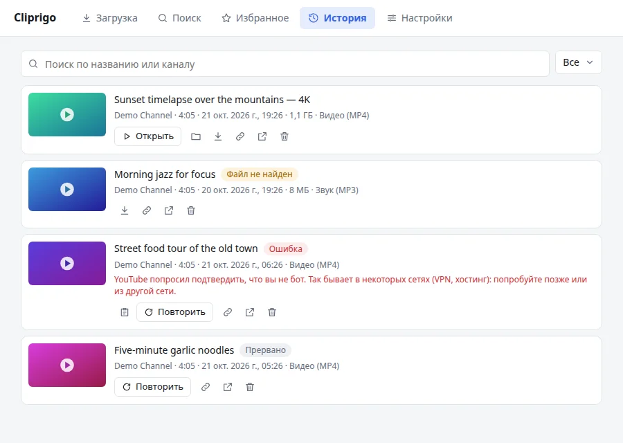
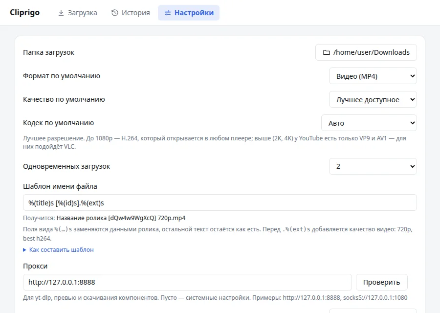

4K, 1080p, 720p или MP3
MP4 в лучшем качестве, точное разрешение или только звук в MP3 или M4A. Качество попадает в имя файла, поэтому версии не перезаписывают друг друга.
Вставьте ссылку, выберите качество и сохраните — от видео в 4K до MP3. Cliprigo хранит историю всего, что вы скачали, поэтому ничего не потеряется.
Последняя версия v0.1.5 · Без рекламы и регистрации


Удобная программа поверх yt-dlp — самого надёжного загрузчика YouTube. Без командной строки и настройки.
MP4 в лучшем качестве, точное разрешение или только звук в MP3 или M4A. Качество попадает в имя файла, поэтому версии не перезаписывают друг друга.
Откройте плейлист или канал и отметьте нужные ролики. Уже скачанные помечены, и с них снята галочка.
Несколько загрузок одновременно, с прогрессом, скоростью и оставшимся временем, и предупреждение перед повторной загрузкой.
Поиск, фильтр по статусу и открытие файла в один клик. Превью работают без интернета, любую загрузку можно повторить.
H.264 для любого плеера, AV1 для самых маленьких файлов или VP9 — с подсказкой, где что воспроизводится.
Скачивает yt-dlp и ffmpeg, проверяет их контрольные суммы и обновляет yt-dlp, когда YouTube что-то меняет.
Ищите на YouTube с фильтрами по дате, длительности и качеству, смотрите ролики прямо в приложении и сохраняйте в избранное.
Без регистрации и рекламы. Код на GitHub под лицензией MIT. Русский и английский язык, светлая и тёмная тема.
Три шага, около десяти секунд.
Скопируйте ссылку на видео, плейлист или канал на YouTube и вставьте её в Cliprigo.
Видео или только звук, нужное качество и, если хотите, папку.
Следите за прогрессом в очереди. Файл окажется в папке «Загрузки» и останется в истории.
Аккуратный интерфейс, который следует светлой или тёмной теме системы.



Та же программа на телефоне — без root и без аккаунта Google.
Бесплатно для любой системы. Версия v0.1.5.
x64 и ARM64
Да. Cliprigo бесплатна, её код открыт под лицензией MIT. Нет рекламы, регистрации и платных функций.
Сборки пока не подписаны сертификатом разработчика, поэтому при первом запуске система показывает предупреждение.
Windows: «Система Windows защитила ваш компьютер» → Подробнее → Выполнить в любом случае.
macOS: Системные настройки →
Конфиденциальность и безопасность →
Всё равно открыть, или выполните в Терминале
xattr -dr com.apple.quarantine
/Applications/Cliprigo.app.
Скачайте APK для arm64 (для старых телефонов — armv7), откройте файл и разрешите установку приложений из браузера или файлового менеджера. Нужен Android 11 или новее.
Видео MP4 в лучшем доступном качестве или в выбранном разрешении — 4K, 1440p, 1080p, 720p — с кодеком H.264, AV1 или VP9, а также только звук в MP3 или M4A.
YouTube не доверяет некоторым сетям: VPN, хостингам, части прокси. Попробуйте позже или из другой сети.
По умолчанию в папку «Загрузки», другую папку можно выбрать в настройках. На Android файлы попадают в Download/Cliprigo.
Бесплатно, с открытым кодом, готово к работе за минуту.